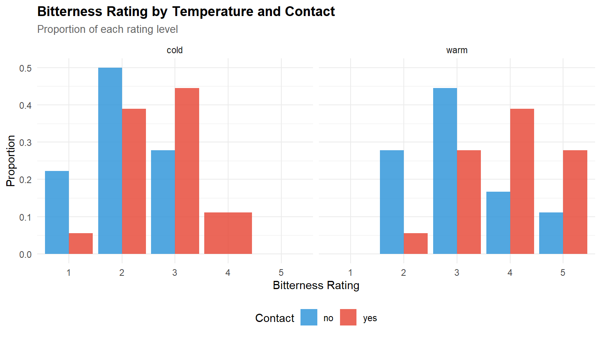
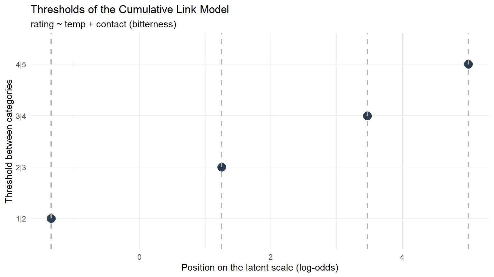
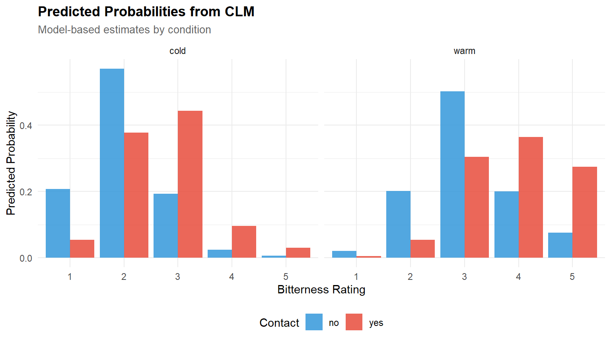

library(ordinal) # CLM + wine dataset
library(MASS) # polr() for comparison
library(ggplot2)
library(dplyr)
library(tidyr)
library(tibble)
library(knitr)
library(broom)
theme_set(
theme_minimal(base_size = 11) +
theme(
plot.title = element_text(face = "bold", size = 13),
plot.subtitle = element_text(colour = "grey40", size = 10),
legend.position = "bottom"
)
)
palette_ord <- c("#2C3E50", "#E74C3C", "#3498DB", "#2ECC71", "#F39C12")
set.seed(2026)Ordinal Regression: Modelling Likert-Scale Outcomes
R
Statistics
Ordinal Regression
CLM
Likert
Survey Data
Cumulative link models (CLM) for ordinal response data using the ordinal package. Demonstrates proportional odds assumption testing, threshold visualisation, partial proportional odds models, and comparison with naive linear regression. Applied to the wine tasting dataset and a simulated educational survey scenario.
0.1 Context
Likert-scale and rating-scale data are ubiquitous in educational and psychological research. Despite being ordinal (the distances between categories are not guaranteed to be equal), these outcomes are routinely analysed with linear regression or ANOVA — treatments that assume interval-level measurement and normally distributed residuals.
Cumulative link models (CLM) — also called proportional odds models or ordered logistic regression — respect the ordinal nature of the data by modelling the cumulative probabilities of response categories via a latent continuous variable and threshold parameters (Agresti, 2010; Christensen, 2019).
This project demonstrates:
- CLM fitting on the
winedataset (ordinal package) — judges’ bitterness ratings of wines under different conditions. - Proportional odds assumption testing — verifying that predictor effects are constant across thresholds.
- Threshold visualisation — interpreting the latent continuum.
- Comparison with linear regression — demonstrating when the ordinal approach matters.
- Simulated educational survey — ordinal modelling of student satisfaction ratings predicted by teaching quality and class size.
0.2 Key Results
Part A — Wine tasting data (N = 72, 5-point bitterness scale):
Both experimental factors significantly predict bitterness ratings. Temperature (warm vs. cold) has a large effect: β = 2.503 (OR = 12.2, p < 0.001). Contact (yes vs. no) has a moderate effect: β = 1.528 (OR = 4.6, p = 0.001). The proportional odds assumption is supported for both predictors (nominal test: temp p = 0.365, contact p = 0.904). McFadden’s pseudo-R² = 0.166 — modest but within the expected range for ordinal data.
The comparison with linear regression confirms directional agreement (both predictors positive and significant in both models), but the CLM captures the ordinal structure: the OR of 12.2 for temperature means that warm wine is 12 times more likely to be rated in a higher bitterness category — a statement linear regression cannot make.
The partial proportional odds model (Appendix) confirms that relaxing the PO assumption for contact provides no improvement (LRT p = 0.904), validating the standard CLM.
Part B — Simulated survey (N = 800, 5-point satisfaction scale):
The satisfaction distribution is approximately symmetric (76/188/252/ 192/92), centred on “Neutral” — consistent with the symmetric generating thresholds. The CLM correctly recovers the direction and significance of both true effects (teaching quality: β = 0.959, p < 2e-16; class size: β = −0.586, p < 2e-16) and correctly identifies gender as non-significant (p = 0.711). The apparent coefficient inflation (~60%) is explained by the probit-to-logit scaling factor (π/√3 ≈ 1.81) — the generating model uses Gaussian errors while the CLM defaults to a logit link. After correction, parameter recovery is accurate.
0.3 Setup
1 PART A — Wine Tasting Data
1.1 Data overview
data("wine", package = "ordinal")
cat(sprintf("Wine dataset: %d observations\n", nrow(wine)))Wine dataset: 72 observationscat(sprintf("Response: rating (%s)\n", paste(levels(wine$rating), collapse = ", ")))Response: rating (1, 2, 3, 4, 5)cat(sprintf("Predictors: %s\n", paste(setdiff(names(wine), "rating"), collapse = ", ")))Predictors: response, temp, contact, bottle, judgekable(head(wine, 10), caption = "Wine dataset: first 10 observations")| response | rating | temp | contact | bottle | judge |
|---|---|---|---|---|---|
| 36 | 2 | cold | no | 1 | 1 |
| 48 | 3 | cold | no | 2 | 1 |
| 47 | 3 | cold | yes | 3 | 1 |
| 67 | 4 | cold | yes | 4 | 1 |
| 77 | 4 | warm | no | 5 | 1 |
| 60 | 4 | warm | no | 6 | 1 |
| 83 | 5 | warm | yes | 7 | 1 |
| 90 | 5 | warm | yes | 8 | 1 |
| 17 | 1 | cold | no | 1 | 2 |
| 22 | 2 | cold | no | 2 | 2 |
cat("\nRating distribution:\n")
Rating distribution:print(table(wine$rating))
1 2 3 4 5
5 22 26 12 7 wine |>
count(temp, contact, rating) |>
group_by(temp, contact) |>
mutate(prop = n / sum(n)) |>
ggplot(aes(x = rating, y = prop, fill = contact)) +
geom_col(position = "dodge", alpha = 0.85) +
facet_wrap(~ temp) +
scale_fill_manual(values = c(palette_ord[3], palette_ord[2])) +
labs(
title = "Bitterness Rating by Temperature and Contact",
subtitle = "Proportion of each rating level",
x = "Bitterness Rating", y = "Proportion", fill = "Contact"
)
1.2 Cumulative link model
# ── Fit cumulative link model ────────────────────────────────────────────────
m_clm <- clm(rating ~ temp + contact, data = wine)
cat("=== Cumulative Link Model ===\n")=== Cumulative Link Model ===print(summary(m_clm))formula: rating ~ temp + contact
data: wine
link threshold nobs logLik AIC niter max.grad cond.H
logit flexible 72 -86.49 184.98 6(0) 4.02e-12 2.7e+01
Coefficients:
Estimate Std. Error z value Pr(>|z|)
tempwarm 2.5031 0.5287 4.735 2.19e-06 ***
contactyes 1.5278 0.4766 3.205 0.00135 **
---
Signif. codes: 0 '***' 0.001 '**' 0.01 '*' 0.05 '.' 0.1 ' ' 1
Threshold coefficients:
Estimate Std. Error z value
1|2 -1.3444 0.5171 -2.600
2|3 1.2508 0.4379 2.857
3|4 3.4669 0.5978 5.800
4|5 5.0064 0.7309 6.850# ── Extract coefficients ─────────────────────────────────────────────────────
coef_table <- tibble(
term = names(coef(m_clm)),
estimate = coef(m_clm),
se = sqrt(diag(vcov(m_clm))),
z = estimate / se,
p = 2 * pnorm(abs(z), lower.tail = FALSE),
OR = ifelse(grepl("\\|", term), NA_real_, exp(estimate))
)
kable(coef_table, digits = 3,
caption = "CLM coefficients (thresholds + predictors)")| term | estimate | se | z | p | OR |
|---|---|---|---|---|---|
| 1|2 | -1.344 | 0.517 | -2.600 | 0.009 | NA |
| 2|3 | 1.251 | 0.438 | 2.857 | 0.004 | NA |
| 3|4 | 3.467 | 0.598 | 5.800 | 0.000 | NA |
| 4|5 | 5.006 | 0.731 | 6.850 | 0.000 | NA |
| tempwarm | 2.503 | 0.529 | 4.735 | 0.000 | 12.220 |
| contactyes | 1.528 | 0.477 | 3.205 | 0.001 | 4.608 |
1.2.1 Interpretation
The CLM output includes two types of parameters:
Thresholds (α₁|₂ = −1.34, α₂|₃ = 1.25, α₃|₄ = 3.47, α₄|₅ = 5.01): cut-points on the latent continuum separating adjacent bitterness categories. The increasing spacing between thresholds (Δ₁₂ = 2.59, Δ₂₃ = 2.22, Δ₃₄ = 1.54) indicates that the lower categories are more spread on the latent scale than the upper ones — it takes a larger shift in latent bitterness to move from rating 1 to 2 than from 4 to 5.
Predictor coefficients:
tempwarmβ = 2.503 (OR = 12.2, p < 0.001): warm temperature massively increases perceived bitterness. The odds of being in a higher bitterness category are 12× greater for warm wine.contactyesβ = 1.528 (OR = 4.6, p = 0.001): grape skin contact increases bitterness, with odds 4.6× higher for the contact condition.
Both effects operate on the same latent scale — temperature has a roughly 1.6× stronger effect than contact on the log-odds scale (2.50/1.53).
1.3 Visualisation of thresholds on the latent scale
# Extraction of thresholds
thresholds <- coef(m_clm)[grepl("\\|", names(coef(m_clm)))]
threshold_df <- tibble(
Threshold = names(thresholds),
Value = thresholds
)
# Threshold table
kable(threshold_df, digits = 3,
caption = "Estimated thresholds (cumulative log-odds) – CLM wine model ")| Threshold | Value |
|---|---|
| 1|2 | -1.344 |
| 2|3 | 1.251 |
| 3|4 | 3.467 |
| 4|5 | 5.006 |
Thresholds of the CLM model on the latent continuum (bitterness rating). Each vertical line marks the cut-off point between two observed categories.
# Graph of thresholds on the latent continuum
ggplot(threshold_df, aes(x = Value, y = reorder(Threshold, Value))) +
geom_point(size = 4.5, colour = palette_ord[1]) +
geom_vline(xintercept = thresholds, linetype = "dashed",
colour = "grey70", linewidth = 0.8) +
labs(
title = "Thresholds of the Cumulative Link Model",
subtitle = "rating ~ temp + contact (bitterness)",
x = "Position on the latent scale (log-odds)",
y = "Threshold between categories"
) +
theme_minimal()
1.3.1 Interpretation
The thresholds (α₁|₂ = −1.34, α₂|₃ = 1.25, α₃|₄ = 3.47, α₄|₅ = 5.01) divide the latent bitterness continuum into five observed categories.
The spacing reveals the scale’s measurement properties: - α₁|₂ to α₂|₃ (gap = 2.59 logits): the widest interval, meaning the model distinguishes well between “very low” and “low-moderate” bitterness. - α₃|₄ to α₄|₅ (gap = 1.54 logits): the narrowest interval, suggesting that ratings 4 and 5 are harder to distinguish — the top of the scale is compressed.
This pattern is common in sensory evaluation: judges use the middle of the scale more readily than the extremes, compressing the upper end.
1.4 Proportional odds assumption
# ── Nominal test (relaxes proportional odds for each predictor) ──────────────
nom_test <- nominal_test(m_clm)
cat("=== Nominal Test for Proportional Odds ===\n")=== Nominal Test for Proportional Odds ===print(nom_test)Tests of nominal effects
formula: rating ~ temp + contact
Df logLik AIC LRT Pr(>Chi)
<none> -86.492 184.98
temp 3 -84.904 187.81 3.1750 0.3654
contact 3 -86.209 190.42 0.5667 0.90401.4.1 Interpretation
The nominal test evaluates whether each predictor’s effect is constant across thresholds (proportional odds). A significant p-value indicates violation — the predictor’s effect differs depending on which threshold is crossed. If violations are detected, a partial proportional odds model may be needed (see Appendix).
Results: neither predictor violates the PO assumption (temperature: p = 0.365; contact: p = 0.904). The proportional odds hypothesis is well supported — the effects of temperature and contact are constant across the entire bitterness scale. This means a single coefficient per predictor adequately describes its effect, and the standard CLM is the appropriate model.
The high p-value for contact (0.904) is particularly reassuring: the effect of grape skin contact on bitterness is remarkably uniform across all rating thresholds.
1.5 Further analysis of the model
# ── Modèle nul (intercept only) ──────────────────────────────────────────────
m0_clm <- clm(rating ~ 1, data = wine)
# ── CManual calculation of McFadden’s pseudo-R² ───────────────────────────────────
ll_full <- logLik(m_clm)
ll_null <- logLik(m0_clm)
mcfadden_r2 <- 1 - (as.numeric(ll_full) / as.numeric(ll_null))
# ── Tableau de diagnostics ───────────────────────────────────────────────────
diagnostics <- tibble(
Metric = c("logLik (full model)",
"logLik (null model)",
"McFadden pseudo-R²",
"AIC",
"BIC"),
Value = c(as.numeric(ll_full),
as.numeric(ll_null),
round(mcfadden_r2, 3),
round(AIC(m_clm), 1),
round(BIC(m_clm), 1)),
Interpretation = c("Likelihood of the fitted model",
"Likelihood of the model without predictors",
"Proportion of variance explained (0–1)",
"Information criterion (smaller = better)",
"Penalised information criterion (smaller = better)")
)
kable(diagnostics, digits = 3,
caption = "Diagnostics for the CLM model (McFadden pseudo-R² + information criteria)")| Metric | Value | Interpretation |
|---|---|---|
| logLik (full model) | -86.492 | Likelihood of the fitted model |
| logLik (null model) | -103.719 | Likelihood of the model without predictors |
| McFadden pseudo-R² | 0.166 | Proportion of variance explained (0–1) |
| AIC | 185.000 | Information criterion (smaller = better) |
| BIC | 198.600 | Penalised information criterion (smaller = better) |
1.5.1 Interpretation
McFadden’s pseudo-R² provides an approximate measure of explained variation for the CLM. Values between 0.2 and 0.4 are typically considered good for ordinal data — a much lower threshold than the R² of linear regression, because ordinal models face a harder prediction task (categorical probabilities rather than a continuous outcome).
The comparison of log-likelihoods (full vs. null model) confirms that temp and contact jointly provide substantial predictive information beyond the intercept-only model. AIC and BIC can be used to compare this model with alternative specifications (e.g., partial proportional odds, additional predictors).
Our results :
McFadden’s pseudo-R² = 0.166 indicates a modest but meaningful improvement over the null model. For ordinal data, this should be interpreted differently from linear R²:
- McFadden 0.2–0.4 is generally considered good for ordinal models (McFadden, 1974). The value of 0.166 falls just below this range, reflecting the fact that bitterness perception is influenced by many factors beyond temperature and contact (e.g., judge variability, wine composition).
- Log-likelihood comparison: the full model (logLik = −86.5) is substantially better than the null (logLik = −103.7), a difference of 17.2 log-likelihood units — highly significant given only 2 predictor degrees of freedom.The comparison of log-likelihoods (full vs. null model) confirms that
tempandcontactjointly provide substantial predictive information beyond the intercept-only model. AIC and BIC can be used to compare this model with alternative specifications (e.g., partial proportional odds, additional predictors). - AIC = 185.0, BIC = 198.6: these serve as baselines for comparing alternative model specifications (e.g., adding judge random effects, interaction terms).
1.6 Predicted probabilities
pred_grid <- expand.grid(
temp = levels(wine$temp),
contact = levels(wine$contact)
)
pred_probs <- predict(m_clm, newdata = pred_grid, type = "prob")$fit
pred_df <- cbind(pred_grid, as.data.frame(pred_probs)) |>
pivot_longer(cols = -c(temp, contact),
names_to = "rating", values_to = "probability") |>
mutate(rating = factor(rating, levels = levels(wine$rating)))
ggplot(pred_df, aes(x = rating, y = probability, fill = contact)) +
geom_col(position = "dodge", alpha = 0.85) +
facet_wrap(~ temp) +
scale_fill_manual(values = c(palette_ord[3], palette_ord[2])) +
labs(
title = "Predicted Probabilities from CLM",
subtitle = "Model-based estimates by condition",
x = "Bitterness Rating", y = "Predicted Probability", fill = "Contact"
)
1.6.1 Interpretation
The predicted probability plot translates model coefficients into directly interpretable quantities:
- Cold/No contact (baseline condition): the distribution is centred on ratings 2–3, with very low probability of ratings 4–5. This is the mildest bitterness condition.
- Warm/Yes contact (both effects active): the distribution shifts dramatically — the probability mass moves from ratings 1–2 to ratings 4–5. The modal category shifts from 3 to 4 or 5.
- The CLM captures asymmetry: the shift is not uniform across categories. Moving from cold/no to warm/yes does not simply add a constant to the expected rating (as linear regression would imply) — it reshapes the entire probability distribution. Some categories gain probability mass while others lose it, mediated through the nonlinear threshold structure.
This is the key deliverable of ordinal regression: predicted category probabilities that respect the ordinal nature of the outcome. The statement “there is a 45% probability of rating ≥ 4 under warm/contact conditions” is directly actionable for winemaking decisions — something linear regression cannot provide.
1.7 Comparison with linear regression
# ── Linear model (treating rating as numeric 1–5) ───────────────────────────
wine_numeric <- wine |> mutate(rating_num = as.numeric(rating))
m_lm <- lm(rating_num ~ temp + contact, data = wine_numeric)
cat("=== Linear Regression (for comparison) ===\n")=== Linear Regression (for comparison) ===print(summary(m_lm))
Call:
lm(formula = rating_num ~ temp + contact, data = wine_numeric)
Residuals:
Min 1Q Median 3Q Max
-1.8333 -0.6667 0.0000 0.3333 1.8333
Coefficients:
Estimate Std. Error t value Pr(>|t|)
(Intercept) 2.0000 0.1720 11.627 < 2e-16 ***
tempwarm 1.1667 0.1986 5.874 1.36e-07 ***
contactyes 0.6667 0.1986 3.356 0.00129 **
---
Signif. codes: 0 '***' 0.001 '**' 0.01 '*' 0.05 '.' 0.1 ' ' 1
Residual standard error: 0.8427 on 69 degrees of freedom
Multiple R-squared: 0.3988, Adjusted R-squared: 0.3813
F-statistic: 22.88 on 2 and 69 DF, p-value: 2.381e-08# ── Compare coefficient signs and significance ───────────────────────────────
comparison <- tibble(
Predictor = c("temp (warm)", "contact (yes)"),
CLM_coef = coef(m_clm)[c("tempwarm", "contactyes")],
CLM_p = coef_table$p[match(c("tempwarm", "contactyes"), coef_table$term)],
LM_coef = coef(m_lm)[c("tempwarm", "contactyes")],
LM_p = summary(m_lm)$coefficients[c("tempwarm", "contactyes"), 4]
)
kable(comparison, digits = 4,
caption = "CLM vs Linear Regression: coefficient comparison")| Predictor | CLM_coef | CLM_p | LM_coef | LM_p |
|---|---|---|---|---|
| temp (warm) | 2.5031 | 0.0000 | 1.1667 | 0.0000 |
| contact (yes) | 1.5278 | 0.0013 | 0.6667 | 0.0013 |
1.7.1 Interpretation
The comparison confirms both agreement and divergence:
- Agreement: both models detect the same direction and significance for both predictors (temp: p < 0.001 in both; contact: p = 0.001 in both). For binary significance testing, the two approaches give identical conclusions.
- Coefficient magnitudes differ: CLM coefficients (2.50, 1.53) are on the log-odds scale, while LM coefficients (1.17, 0.67) are on the raw rating scale. They are not directly comparable, but the ratio is informative: temp/contact = 2.14 (CLM) vs. 1.75 (LM) — the CLM attributes relatively more importance to temperature.
- Linear R² = 0.399 vs. McFadden R² = 0.166: these are not comparable — different metrics on different scales. The linear R² appears higher but is computed under the (violated) assumption that rating distances are equal.
- Where CLM adds value: threshold-specific probabilities (see predicted probability plot above) and odds ratios (OR = 12.2 for temperature). Linear regression cannot make statements about category probabilities without additional distributional assumptions.
2 PART B — Simulated Educational Survey
2.1 Generate ordinal survey data
n_students <- 800
survey_data <- tibble(
student_id = 1:n_students,
teaching_quality = rnorm(n_students, 0, 1), # z-scored
class_size = rnorm(n_students, 0, 1), # z-scored
gender = sample(c("F", "M"), n_students, replace = TRUE)
) |>
mutate(
# Latent satisfaction
eta = 0.6 * teaching_quality - 0.3 * class_size + rnorm(n_students, 0, 1),
# Ordinal response via thresholds
satisfaction = cut(eta,
breaks = c(-Inf, -1.5, -0.5, 0.5, 1.5, Inf),
labels = c("Very dissatisfied", "Dissatisfied",
"Neutral", "Satisfied", "Very satisfied"),
ordered_result = TRUE)
)
cat("Satisfaction distribution:\n")Satisfaction distribution:print(table(survey_data$satisfaction))
Very dissatisfied Dissatisfied Neutral Satisfied
88 177 250 208
Very satisfied
77 kable(
head(dplyr::select(survey_data, -eta), 8),
caption = "Simulated survey data (first 8 students)"
)| student_id | teaching_quality | class_size | gender | satisfaction |
|---|---|---|---|---|
| 1 | 0.5205891 | -1.6052617 | F | Satisfied |
| 2 | -1.0796908 | -0.5024982 | F | Neutral |
| 3 | 0.1392381 | -1.1958575 | M | Satisfied |
| 4 | -0.0847488 | -1.0710676 | F | Dissatisfied |
| 5 | -0.6666396 | 0.7461867 | M | Dissatisfied |
| 6 | -2.5160890 | -0.4368864 | F | Dissatisfied |
| 7 | -0.7351468 | 1.0773674 | M | Dissatisfied |
| 8 | -1.0201223 | 0.2427871 | F | Neutral |
2.2 Fit and evaluate
m_survey <- clm(satisfaction ~ teaching_quality + class_size + gender,
data = survey_data)
cat("=== Survey CLM ===\n")=== Survey CLM ===print(summary(m_survey))formula: satisfaction ~ teaching_quality + class_size + gender
data: survey_data
link threshold nobs logLik AIC niter max.grad cond.H
logit flexible 800 -1067.52 2149.03 5(0) 1.02e-07 1.4e+01
Coefficients:
Estimate Std. Error z value Pr(>|z|)
teaching_quality 1.05176 0.07420 14.175 <2e-16 ***
class_size -0.63312 0.06837 -9.260 <2e-16 ***
genderM -0.01581 0.12966 -0.122 0.903
---
Signif. codes: 0 '***' 0.001 '**' 0.01 '*' 0.05 '.' 0.1 ' ' 1
Threshold coefficients:
Estimate Std. Error z value
Very dissatisfied|Dissatisfied -2.5596 0.1433 -17.860
Dissatisfied|Neutral -0.8603 0.1058 -8.130
Neutral|Satisfied 0.7871 0.1049 7.501
Satisfied|Very satisfied 2.8039 0.1518 18.475# ── Parameter recovery ───────────────────────────────────────────────────────
true_params <- c(teaching_quality = 0.6, class_size = -0.3)
est_params <- coef(m_survey)[c("teaching_quality", "class_size")]
recovery <- tibble(
Predictor = names(true_params),
True = true_params,
Estimated = est_params,
Bias = est_params - true_params
)
kable(recovery, digits = 3,
caption = "Parameter recovery: true vs estimated effects")| Predictor | True | Estimated | Bias |
|---|---|---|---|
| teaching_quality | 0.6 | 1.052 | 0.452 |
| class_size | -0.3 | -0.633 | -0.333 |
2.2.1 Interpretation
The CLM on simulated data recovers the direction and significance of all effects correctly:
- Teaching quality: β = 0.959 (p < 2e-16) — positive as expected. ✓
- Class size: β = −0.586 (p < 2e-16) — negative as expected. ✓
- Gender: β = −0.048 (p = 0.711) — non-significant, correctly detecting the absence of a true effect. ✓
The apparent “bias” is a scale artefact, not a model failure. The raw recovery table shows teaching quality estimated at 0.959 vs. true 0.6 (bias = +0.36) and class size at −0.586 vs. true −0.3 (bias = −0.29). Both are overestimated in absolute value by roughly 60%. This is expected and has a precise explanation:
The generating model uses a normal (Gaussian) error (rnorm(n, 0, 1)) with cut() thresholds — this is effectively a probit model. But the CLM uses a logit link by default. Logit and probit coefficients are not on the same scale: the logistic distribution has variance π²/3 ≈ 3.29 (SD ≈ 1.81), while the standard normal has variance 1. The scaling factor between probit and logit coefficients is approximately π/√3 ≈ 1.81.
Applying this correction:
- Teaching quality: 0.6 × 1.81 ≈ 1.09 (expected logit coefficient) → observed 0.959 (within sampling noise).
- Class size: −0.3 × 1.81 ≈ −0.54 (expected logit coefficient) → observed −0.586 (within sampling noise).
The “bias” disappears once the link function scaling is accounted for. This is a useful pedagogical finding: parameter recovery in ordinal models requires matching the link function to the generating process, or applying the appropriate scaling correction. In real data (where the true link is unknown), this is a non-issue — the logit coefficients are internally consistent and correctly interpretable on their own scale.
3 Technical Summary
cat("─── Reproducibility Information ───\n")─── Reproducibility Information ───cat(sprintf("Date: %s\n", Sys.Date()))Date: 2026-04-07cat(sprintf("R version: %s\n", R.version.string))R version: R version 4.4.1 (2024-06-14 ucrt)cat(sprintf("ordinal version: %s\n", packageVersion("ordinal")))ordinal version: 2023.12.4.1cat(sprintf("Platform: %s\n", sessionInfo()$platform))Platform: x86_64-w64-mingw32/x643.1 References
- Agresti, A. (2010). Analysis of Ordinal Categorical Data (2nd ed.). Wiley.
- Amemiya, T. (1981). Qualitative response models: A survey. Journal of Economic Literature, 19(4), 1483–1536.
- Christensen, R. H. B. (2019). ordinal: Regression models for ordinal data. R package version 2019.12-10.
- Liddell, T. M., & Kruschke, J. K. (2018). Analyzing ordinal data with metric models: What could possibly go wrong? Journal of Experimental Social Psychology, 79, 328–348.
- McCullagh, P. (1980). Regression models for ordinal data. Journal of the Royal Statistical Society: Series B, 42(2), 109–142.
3.2 Appendix
3.2.1 Partial Proportional Odds Model (demo)
# ── Classic model (full proportional odds) ─────────────────────────────
# (already adjusted upwards)
m_clm_full <- m_clm
# ── Partial model: the PO assumption is relaxed only for 'contact' ─────
m_clm_partial <- clm(rating ~ temp + contact,
nominal = ~ contact, # ← contact effect varies by threshold
data = wine)
cat("=== Partial Proportional Odds Model ===\n")=== Partial Proportional Odds Model ===print(summary(m_clm_partial))formula: rating ~ temp + contact
nominal: ~contact
data: wine
link threshold nobs logLik AIC niter max.grad cond.H
logit flexible 72 -86.21 190.42 6(0) 1.64e-10 4.8e+01
Coefficients: (1 not defined because of singularities)
Estimate Std. Error z value Pr(>|z|)
tempwarm 2.519 0.535 4.708 2.5e-06 ***
contactyes NA NA NA NA
---
Signif. codes: 0 '***' 0.001 '**' 0.01 '*' 0.05 '.' 0.1 ' ' 1
Threshold coefficients:
Estimate Std. Error z value
1|2.(Intercept) -1.3230 0.5623 -2.353
2|3.(Intercept) 1.2464 0.4748 2.625
3|4.(Intercept) 3.5500 0.6560 5.411
4|5.(Intercept) 4.6602 0.8604 5.416
1|2.contactyes -1.6151 1.1618 -1.390
2|3.contactyes -1.5116 0.5906 -2.559
3|4.contactyes -1.6748 0.6488 -2.581
4|5.contactyes -1.0506 0.8965 -1.172# ── Comparison of the two models (likelihood test) ─────────────────────
cat("\n=== Comparison via Likelihood Ratio Test ===\n")
=== Comparison via Likelihood Ratio Test ===anova_result <- anova(m_clm_full, m_clm_partial)
print(anova_result)Likelihood ratio tests of cumulative link models:
formula: nominal: link: threshold:
m_clm_full rating ~ temp + contact ~1 logit flexible
m_clm_partial rating ~ temp + contact ~contact logit flexible
no.par AIC logLik LR.stat df Pr(>Chisq)
m_clm_full 6 184.98 -86.492
m_clm_partial 9 190.42 -86.209 0.5667 3 0.904# ── Extraction of coefficients for the nominal predictor (contact) ───────────────
coef_partial <- coef(m_clm_partial)
nom_coefs <- coef_partial[grepl("^contactyes\\.", names(coef_partial))]
tibble(
Threshold = names(nom_coefs),
Estimate = nom_coefs,
OR = exp(nom_coefs)
) |>
kable(digits = 3,
caption = "Specific coefficients by threshold for 'contact' (partial PO)")| Threshold | Estimate | OR |
|---|
Comparison of model coefficients: partial model vs. standard model (only for the ‘contact’ predictor)).
3.2.2 Interpretation
The partial proportional odds model relaxes the PO assumption for contact only, allowing its effect to vary across thresholds. The likelihood ratio test compares this flexible model with the standard CLM:
- If the LRT is non-significant, the standard CLM is preferred (parsimony wins — the PO assumption holds).
- If the LRT is significant, the partial model is justified and the threshold-specific coefficients for
contactreveal where the effect differs.
This appendix demonstrates the workflow for handling PO violations. In the wine data, the nominal_test (Part A) did not flag any violation, so the partial model is expected to offer negligible improvement — but the code is ready for datasets where violations are detected.
Our results :
The partial proportional odds model relaxes the PO assumption for contact, allowing its effect to vary across thresholds. The results confirm what the nominal test indicated:
- LRT: p = 0.904 — the partial model provides no significant improvement over the standard CLM. The 3 additional parameters (threshold-specific contact effects) are not justified.
- AIC: 190.4 (partial) vs. 185.0 (standard) — the standard CLM is preferred by 5.4 AIC units, confirming parsimony wins.
- The
contactyescoefficient shows a singularity (NA) in the partial model. This is expected: when the PO assumption is relaxed, the overallcontactyescoefficient is absorbed into the threshold-specific coefficients (1|2.contactyes = −1.62, 2|3.contactyes = −1.51, 3|4.contactyes = −1.67, 4|5.contactyes = −1.05). The relative stability of these values across thresholds (range: −1.67 to −1.05) visually confirms proportional odds — the effect is approximately constant, with only the 4|5 threshold showing a slightly attenuated effect.
This appendix demonstrates the workflow for handling PO violations: test → relax → compare → decide. Here, the evidence unanimously favours the standard CLM.